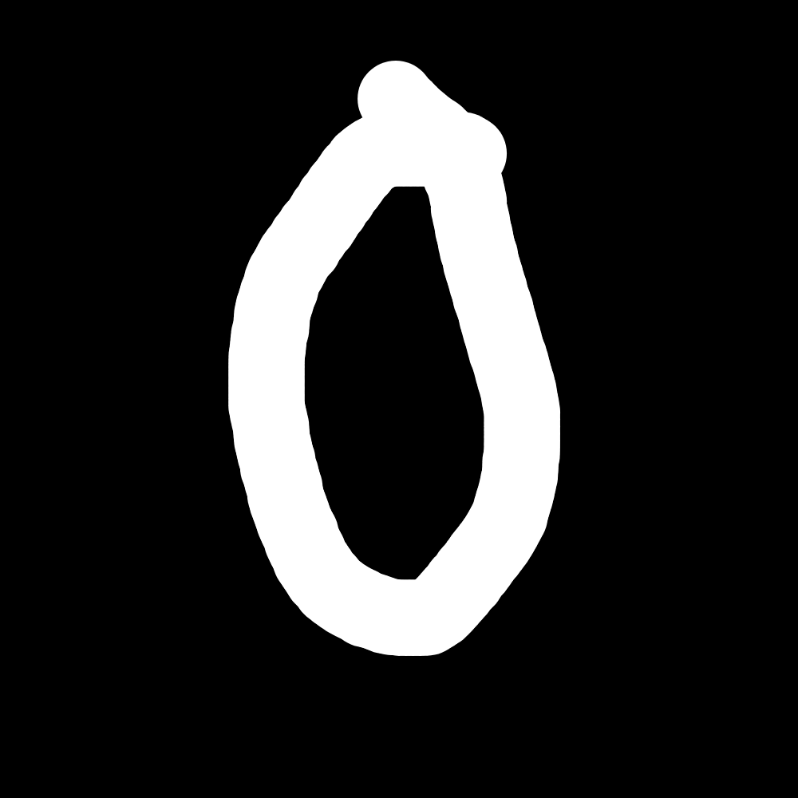
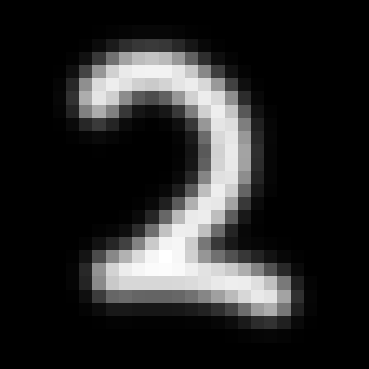

Machine learning · Sept – Oct 2026
MNIST neural network from scratch
A handwritten-digit classifier written with NumPy only: forward pass, backpropagation, cross-entropy loss and mini-batch training.
- Python
- NumPy
- Backpropagation
- Pillow



Overview
The network has a 784-unit input, two hidden layers of 128 and 64 ReLU units, and a 10-way softmax output. Weights use He initialization, and training runs 100 epochs of mini-batch gradient descent at a learning rate of 0.1 on the MNIST dataset. TensorFlow is used only to download the data.
To test on drawings of my own, testing.py crops each image to the digit, fits it into a 20×20 box, centers it on a 28×28 canvas and blurs it slightly to mimic MNIST's anti-aliasing. The project includes sample digits drawn in Kleki and the trained parameters, so predictions run without retraining.
- Role
- Design and implementation
- Timeline
- Sept – Oct 2026
- Focus
- Machine learning
- Tools
- Python, NumPy, Backpropagation, Pillow
Highlights
- 784-128-64-10 network with ReLU hidden layers, He initialization and a softmax output.
- Backpropagation and cross-entropy gradients derived and coded by hand.
- Preprocessing script that turns your own drawings into 28×28 MNIST-style inputs.
Source code
ShowHide neuralNet.py238 lines
import os
from platform import system
#Just to disable errors, I had to look up how to do this
os.environ['TF_CPP_MIN_LOG_LEVEL'] = '3'
import numpy as np
import pickle
import warnings
warnings.filterwarnings("ignore", category=FutureWarning)
def init_params_he(layer_sizes, seed=None):
# if seeded random number generation
if seed is not None:
np.random.seed(seed)
# parameter dictionary for neural network
params = {}
# for "layer" in range 1 to layer_sizes
for l in range(1, len(layer_sizes)):
# inputs into the node descriped as nodes_in
nodes_in = layer_sizes[l-1]
# He initilization using normal distribution and variance adjustment term
params['W'+str(l)] = np.random.randn(layer_sizes[l], nodes_in) * np.sqrt(2.0 / nodes_in)
# Bias vector initialized to 0 due to symmetry preservation
params['b'+str(l)] = np.zeros((layer_sizes[l], 1))
return params
# definition of the sigmoid activation function to normalize activation values
def sigmoid(Z):
A = 1 / (1 + np.exp(-Z))
return A, Z
# definition of the softmax activation function to normalize activation values
def softmax(Z):
expZ = np.exp(Z - np.max(Z, axis=0, keepdims=True))
return expZ / np.sum(expZ, axis=0, keepdims=True)
# definition of the relu activation function to normalize activation values. I used this activation function as it
# is most commonly used with the He initialization
def relu(Z):
return np.maximum(0, Z), Z
# forward propogation handling, parameters include input vector X and weight parameters
def forward_prop(X, params):
# input layer equals X
A = X
# temporary data storage
caches = []
# number of layers (pairs W/b)
L = len(params) // 2
# for all the weights/biases in our network
for l in range(1, L + 1):
# save the current activation layer as the previous - we are moving on
A_prev = A
# create a temp matrix to store weights
W = params['W'+str(l)]
# create a temp vector to store biases
b = params['b'+str(l)]
# compute linear hypothesis
Z = np.dot(W, A_prev) + b
# save information to linear cache
linear_cache = (A_prev, W, b)
# For all non-final activation layers, use the relu activation function, for the final layer, use softmax
if l == L:
# set A to new activations
A = softmax(Z)
# save activation linear hypothesis to activation cache
activation_cache = Z
else:
A, activation_cache = relu(Z)
caches.append((linear_cache, activation_cache))
# return both the final activation layer (the output) and the caches used for data handling
return A, caches
# cost function, in this case I used corss entropy. But you could use quadratic loss if you implemented multi-class
# classification
def cost_function(AL, Y):
m = Y.shape[1]
cost = -np.sum(Y * np.log(AL + 1e-12)) / m
return float(np.squeeze(cost))
# computes back propagation for the previous layer. Parameters include the difference from the expected solution dA,
# the cache values found earlier, and the activation type set to 'relu'
def one_layer_backward(dA, cache, activation='relu'):
# saves linear and activation cache that were computed earlier
linear_cache, activation_cache = cache
A_prev, W, b = linear_cache
m = A_prev.shape[1]
# handles different activation functions
if activation == 'relu':
dZ = dA.copy()
dZ[activation_cache <= 0] = 0
elif activation == 'sigmoid':
A, _ = sigmoid(activation_cache)
dZ = dA * A * (1 - A)
elif activation == 'softmax':
dZ = dA
else:
exit('Invalid activation function')
# Same for all activation functions as we've used dA and the activation type to compute dZ. Computes the changes
# in the W and b values needed to minimize the cross-entropy cost function
dW = (1.0/m) * np.dot(dZ, A_prev.T)
db = (1.0/m) * np.sum(dZ, axis=1, keepdims=True)
dA_prev = np.dot(W.T, dZ)
return dA_prev, dW, db
# iterates over the entire network and computes back-propagation for everything, parameters include the output layer
# found through forward propagation, the expected values in Y, and the caches calculated
def backprop(AL, Y, caches):
# gradient dictionary
grads = {}
L = len(caches)
dAL = AL - Y # softmax + cross-entropy
# set current cache to the cache of the last layer
current_cache = caches[L-1]
# use softmax to compute the gradient changes for the previous layer
grads['dA'+str(L-1)], grads['dW'+str(L)], grads['db'+str(L)] \
= one_layer_backward(dAL, current_cache, activation='softmax')
# use relu for the rest of the gradient descent
for l in reversed(range(L-1)):
current_cache = caches[l]
grads['dA'+str(l)], grads['dW'+str(l+1)], grads['db'+str(l+1)] \
= one_layer_backward(grads['dA'+str(l+1)], current_cache)
# return the gradient descent
return grads
# a method to update the parameters of the network depending on the values computed from the gradient descent.
# The learning rate is the small step we take in the direction of the gradient
def update_parameters(parameters, grads, learning_rate):
L = len(parameters) // 2
for l in range(1, L+1):
# changes are made OPPOSITE the gradient in the direction of greatest decrease
parameters['W'+str(l)] -= learning_rate * grads['dW'+str(l)]
parameters['b'+str(l)] -= learning_rate * grads['db'+str(l)]
return parameters
# Converts the mnist data set into 10 one-hot valued vectors
def one_hot(Y, num_classes=10):
return np.eye(num_classes)[Y.reshape(-1)].T
# Instead of iterating over all inputs, take a randomly selected batch of inputs
def get_mini_batches(X, Y, batch_size, seed=None):
# fairly readable code, it shuffles both the inputs and outputs together, and selects up to batch size
m = X.shape[1]
if seed is not None:
np.random.seed(seed)
perm = np.random.permutation(m)
X_shuffled = X[:, perm]
Y_shuffled = Y[:, perm]
mini_batches = []
for k in range(0, m, batch_size):
X_batch = X_shuffled[:, k:k+batch_size]
Y_batch = Y_shuffled[:, k:k+batch_size]
mini_batches.append((X_batch, Y_batch))
return mini_batches
# training algorithm. Parameters of note are epochs, which is the number of iterations that will be done, and
# learning_rate, which is the magnitude of the step taken opposite the gradient. Others hav been explained or are
# self-explanatory.
def train_minibatch(X, Y, layer_dims, epochs, learning_rate, batch_size=64, print_every=1):
# initilize network for training
params = init_params_he(layer_dims)
cost_history = []
grads = None
# iterate over the data set once for every epoch
for epoch in range(epochs):
# initialize a mini-set of batches to reduce run-time
minibatches = get_mini_batches(X, Y, batch_size)
epoch_cost = 0.0
# begins training, first is forward prop, then cost function evaluation, then back prop, then reassignment
for X_batch, Y_batch in minibatches:
# forward prop
AL, caches = forward_prop(X_batch, params)
# cost evaluation
cost = cost_function(AL, Y_batch)
# backpropagation and gradient descent
grads = backprop(AL, Y_batch, caches)
# parameter updating from gradient descent
params = update_parameters(params, grads, learning_rate)
# the cost of every epoch is the cost of the output times the number of classes
# should reduce with time as the neural network converges
epoch_cost += cost * X_batch.shape[1]
# final epoch output
epoch_cost /= X.shape[1]
cost_history.append(epoch_cost)
# print the estimated average gradient magnitude for each epoch - should get smaller over time
if (epoch % print_every) == 0:
grad_norm = 0.0
if grads is not None:
for l in range(1, len(layer_dims)):
grad_norm += np.linalg.norm(grads['dW'+str(l)])
print(f"Epoch {epoch:03d} - cost: {epoch_cost:.4f} - grad_norm(est): {grad_norm:.4f}")
return params, cost_history
# just a shortcut to covert the one-hot vectors back into numeric values
def forward_predict(X, params):
AL, _ = forward_prop(X, params)
return np.argmax(AL, axis=0)
# main function where the network is first trained, and where the parameters are then stored
def main():
# imported here (not at top) so testing.py can use forward_predict without installing tensorflow
from tensorflow.keras.datasets import mnist
# X contains images, Y contains solutions. Train is used to train the network, test is used to test after
(X_train, Y_train_raw), (X_test, Y_test_raw) = mnist.load_data()
# normalize image data
X_train = X_train.reshape(X_train.shape[0], -1).T.astype(np.float32) / 255.0
X_test = X_test.reshape(X_test.shape[0], -1).T.astype(np.float32) / 255.0
# convert answer keys into one-hot vectors
Y_train = one_hot(Y_train_raw)
Y_test = one_hot(Y_test_raw)
# neural network initializations. There are 784 input nodes (28*28) 2 hidden layers, and one output layer
layer_sizes = [784, 128, 64, 10]
epochs = 100
learning_rate = 0.1
batch_size = 32
# train the algorithm and save parameters
params, cost_history = (
train_minibatch(X_train, Y_train, layer_sizes, epochs, learning_rate, batch_size=batch_size, print_every=1))
# save to pkl file to test in testing file
with open('trained_params.pkl', 'wb') as f:
pickle.dump(params, f)
# save predictions and compare to real labels and compute accuracy
predictions = forward_predict(X_test, params)
labels = np.argmax(Y_test, axis=0)
accuracy = np.mean(predictions == labels) * 100
print(f"Test accuracy: {accuracy:.2f}%")
if __name__ == "__main__":
main()
ShowHide testing.py179 lines
# test_examples.py
import os
os.environ['TF_CPP_MIN_LOG_LEVEL'] = '3'
import pickle
import argparse
import numpy as np
from PIL import Image, ImageFilter
import matplotlib
matplotlib.use('Agg') # Non-GUI backend, good for scripts
import matplotlib.pyplot as plt
# Import the forward_predict function from your neural net file
# neuralNet.py must be in the same folder (or on PYTHONPATH)
from neuralNet import forward_predict # returns np.argmax(AL, axis=0)
import warnings
warnings.filterwarnings("ignore", category=FutureWarning)
# load the pkl file which contrains the parameters we trained
def load_params(path='trained_params.pkl'):
with open(path, 'rb') as f:
return pickle.load(f)
# opens image path and resizes down to 28 x 28 - the format used by training data
# ideally inputs should be 28x28 to avoid issues with the neural network
# also applies slight blur to mimic MNIST anti-aliasing and shows the image
def preprocess_image(img_path, invert_if_needed=False, show=False, save_preprocessed="preprocessed_test_image.png"):
img = Image.open(img_path).convert('L')
# get numpy copy for bbox detection and polarity handling
arr0 = np.array(img).astype(np.float32)
if invert_if_needed:
arr0 = 255.0 - arr0
# mild threshold to detect foreground pixels
thresh = 10
mask = arr0 > thresh
coords = np.argwhere(mask)
if coords.size == 0:
# empty image fallback: just resize and normalize
img28 = Image.fromarray(arr0).resize((28, 28), Image.Resampling.LANCZOS)
img28 = img28.filter(ImageFilter.GaussianBlur(radius=0.5))
arr = np.array(img28).astype(np.float32) / 255.0
else:
y0, x0 = coords.min(axis=0)
y1, x1 = coords.max(axis=0) + 1
cropped = arr0[y0:y1, x0:x1]
# resize to fit into 20x20 box while preserving aspect ratio
h, w = cropped.shape
if h > w:
new_h = 20
new_w = max(1, int(round(w * (20.0 / h))))
else:
new_w = 20
new_h = max(1, int(round(h * (20.0 / w))))
pil_crop = Image.fromarray(cropped).resize((new_w, new_h), Image.Resampling.LANCZOS)
# paste into 28x28 canvas centered (4px padding typical for MNIST)
canvas = Image.new('L', (28, 28), color=0)
left = (28 - new_w) // 2
top = (28 - new_h) // 2
canvas.paste(pil_crop, (left, top))
arr = np.array(canvas).astype(np.float32)
# compute center of mass (intensity-weighted) and shift to center
total = arr.sum()
if total > 0:
ys, xs = np.indices(arr.shape)
cx = (xs * arr).sum() / total
cy = (ys * arr).sum() / total
shiftx = int(round(14.0 - cx))
shifty = int(round(14.0 - cy))
arr = np.roll(arr, shift=shifty, axis=0)
arr = np.roll(arr, shift=shiftx, axis=1)
if shifty > 0:
arr[:shifty, :] = 0
elif shifty < 0:
arr[shifty:, :] = 0
if shiftx > 0:
arr[:, :shiftx] = 0
elif shiftx < 0:
arr[:, shiftx:] = 0
# slight blur to mimic MNIST anti-aliasing
pil_arr = Image.fromarray(arr.astype(np.uint8))
pil_arr = pil_arr.filter(ImageFilter.GaussianBlur(radius=0.8))
arr = np.array(pil_arr).astype(np.float32)
# normalize
arr = arr / 255.0
if show:
plt.imshow(arr, cmap='gray')
plt.axis('off')
if save_preprocessed:
plt.savefig(save_preprocessed, bbox_inches='tight', pad_inches=0)
plt.close()
return arr.reshape(-1, 1)
# pre-processes a folder - cleans up the evaluate_labeled_folder method
def preprocess_folder(folder_path, invert_if_needed=False, exts=('.png','.jpg','.jpeg','.bmp')):
X_list = []
filenames = []
for fname in sorted(os.listdir(folder_path)):
if not fname.lower().endswith(exts):
continue
full = os.path.join(folder_path, fname)
X_list.append(preprocess_image(full, invert_if_needed=invert_if_needed))
filenames.append(fname)
if len(X_list) == 0:
return None, None
X = np.concatenate(X_list, axis=1) # (784, m)
return X, filenames
# evaluates the neural network for one image
def predict_single_file(img_path, params, invert_if_needed=False):
X = preprocess_image(img_path, invert_if_needed=invert_if_needed, show=True)
pred = forward_predict(X, params) # returns array shape (1,)
print(f"{os.path.basename(img_path)} -> predicted: {int(pred[0])}")
return int(pred[0])
# evaluates the neural network for a folder of images
def evaluate_labeled_folder(folder_path, params, invert_if_needed=False):
X, fnames = preprocess_folder(folder_path, invert_if_needed=invert_if_needed)
if X is None:
print("No images found in folder.")
return
# predictions
preds = forward_predict(X, params)
labels = []
for f in fnames:
try:
# only treat the first character as a label if it is a lone digit (not the start of a number like a year)
if len(f) > 1 and f[1].isdigit():
raise ValueError
labels.append(int(f[0]))
except:
labels.append(None)
labels = np.array(labels, dtype=object)
mask = np.array([lbl is not None for lbl in labels])
if mask.sum() > 0:
acc = np.mean(preds[mask].astype(int) == labels[mask].astype(int)) * 100.0
print(f"Accuracy on labeled folder '{folder_path}': {acc:.2f}% ({mask.sum()} labeled images)")
else:
print("No labeled filenames found (leading digit expected).")
for fname, p, lbl in zip(fnames, preds, labels):
print(f"{fname} -> pred={int(p)} label={lbl}")
return preds, labels
def main():
# allows for the user to select files, folders, and directories. If you have a white background, add invert
parser = argparse.ArgumentParser(description="Test neuralNet forward_predict on images")
parser.add_argument("--params", default="trained_params.pkl")
parser.add_argument("--file")
parser.add_argument("--folder")
parser.add_argument("--invert", action="store_true")
args = parser.parse_args()
# if parameters file is missing -- the network is not trained
if not os.path.exists(args.params):
print(f"Parameters file not found: {args.params}")
return
params = load_params(args.params)
# processes user input
if args.file:
predict_single_file(args.file, params, invert_if_needed=args.invert)
if args.folder:
evaluate_labeled_folder(args.folder, params, invert_if_needed=args.invert)
if not args.file and not args.folder:
print("Specify --file IMAGE or --folder PATH. See --help for options.")
if __name__ == "__main__":
main()
Run it
python testing.py --file 2025_10_21_0x1_Kleki.pngInstall dependencies with pip install -r requirements.txt from the Projects repository.